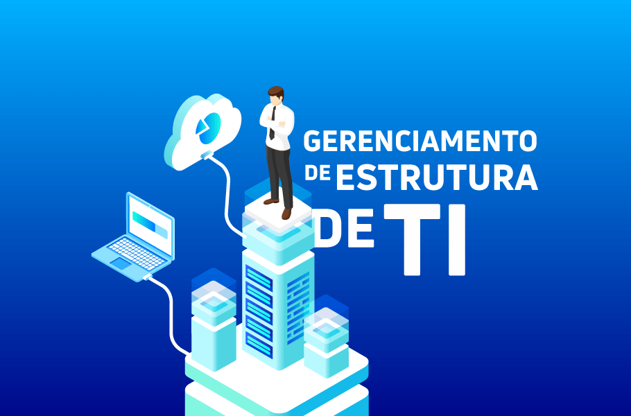

MEUS PROJETOS
Aqui estão listados alguns dos projetos em que trabalhei.
- Análise financeira
Trabalhando com informações financeiras de empresas para criar relatórios e recomendações que contribuam para o lucro e a saúde do negócio. Coletando dados financeiros e históricos, informações sobre preços de ações, estatísticas internas de empresas, estatísticas relacionadas ao mercado externo. Elaboro pesquisas sobre o setor industrial.
- Consultoria de Infraestrutura

Análise, projeto e implementação de soluções em rede para atender às necessidades de empresas em geral. Conhecendo os diferentes tipos de redes existentes (LAN, VPN, MAN etc.) e as suas características, como consultor pude evitar que o cliente fizesse investimentos desnecessários, aumentando a capacidade da rede, utilizando a sua atual estrutura.
- Suporte em redes
Atender e priorizar solicitações, responder a dúvidas e problemas simples, Identificar incidentes de TI, aplicar scripts para resolver conflitos técnicos, encaminhar solicitações para o nível de suporte adequado. questões de senha, problemas básicos de hardware ou software, dúvidas de rotina, pequenos ajustes, treinamento para identificar rapidamente questões que requerem atenção mais especializada.